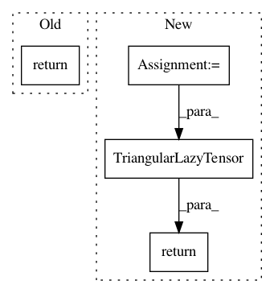

d4806006e851ba3acf9d11d17eac9e90d41f487e,gpytorch/lazy/triangular_lazy_tensor.py,TriangularLazyTensor,add_diag,#TriangularLazyTensor#Any#,57
Before Change
def add_diag(self, added_diag):
shape = _mul_broadcast_shape(self._diag.shape, added_diag.shape)
return self.__class__(
AddedDiagLazyTensor(self._tensor.expand(shape), added_diag.expand(shape)), upper=self._upper
)
def diag(self):
return self._tensor.diag()
After Change
from .added_diag_lazy_tensor import AddedDiagLazyTensor
shape = _mul_broadcast_shape(self._diag.shape, added_diag.shape)
added_diag_lt = AddedDiagLazyTensor(self._tensor.expand(shape), added_diag.expand(shape))
return TriangularLazyTensor(added_diag_lt, upper=self.upper)
def diag(self) -> Tensor:
return self._tensor.diag()
In pattern: SUPERPATTERN
Frequency: 3
Non-data size: 4
Instances
Project Name: cornellius-gp/gpytorch
Commit Name: d4806006e851ba3acf9d11d17eac9e90d41f487e
Time: 2020-07-17
Author: balandat@fb.com
File Name: gpytorch/lazy/triangular_lazy_tensor.py
Class Name: TriangularLazyTensor
Method Name: add_diag
Project Name: cornellius-gp/gpytorch
Commit Name: ff5ef830fb3dca17fdac7ea47b000b6c515bf212
Time: 2020-07-17
Author: balandat@fb.com
File Name: gpytorch/lazy/block_interleaved_lazy_tensor.py
Class Name: BlockInterleavedLazyTensor
Method Name: _cholesky
Project Name: cornellius-gp/gpytorch
Commit Name: ff5ef830fb3dca17fdac7ea47b000b6c515bf212
Time: 2020-07-17
Author: balandat@fb.com
File Name: gpytorch/lazy/block_diag_lazy_tensor.py
Class Name: BlockDiagLazyTensor
Method Name: _cholesky